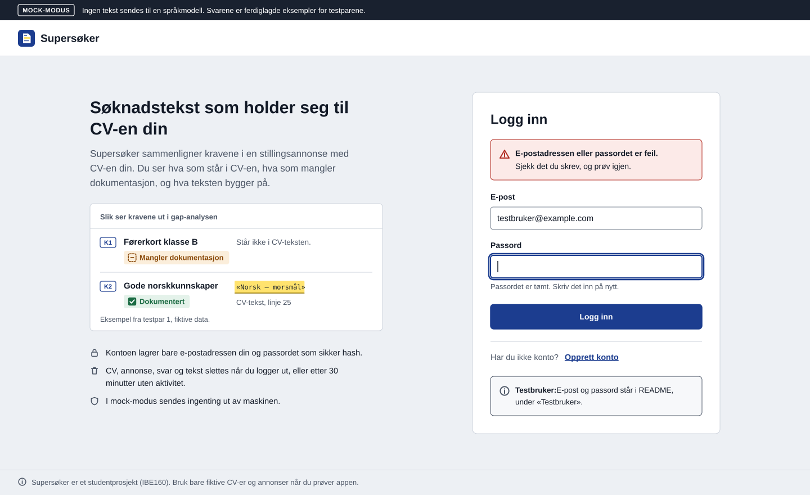
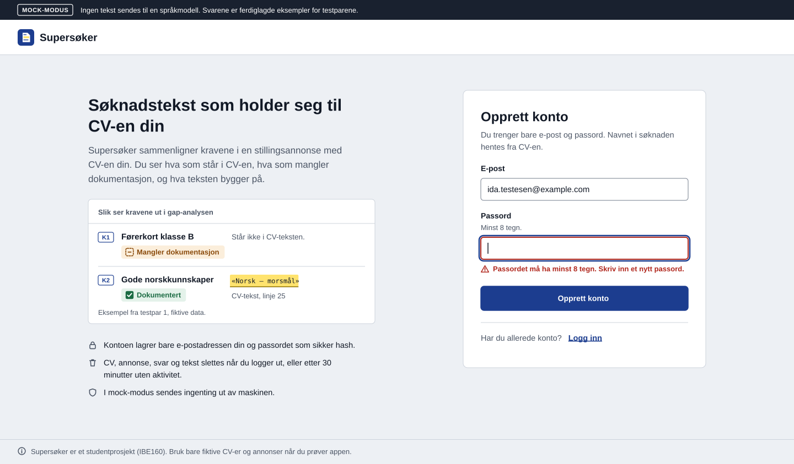
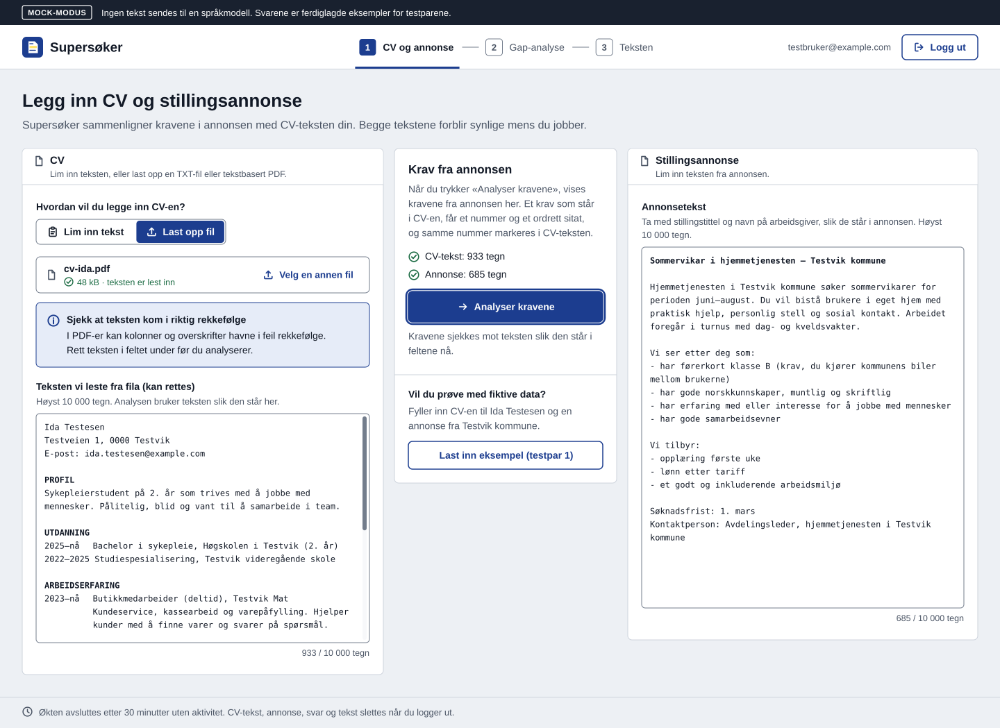
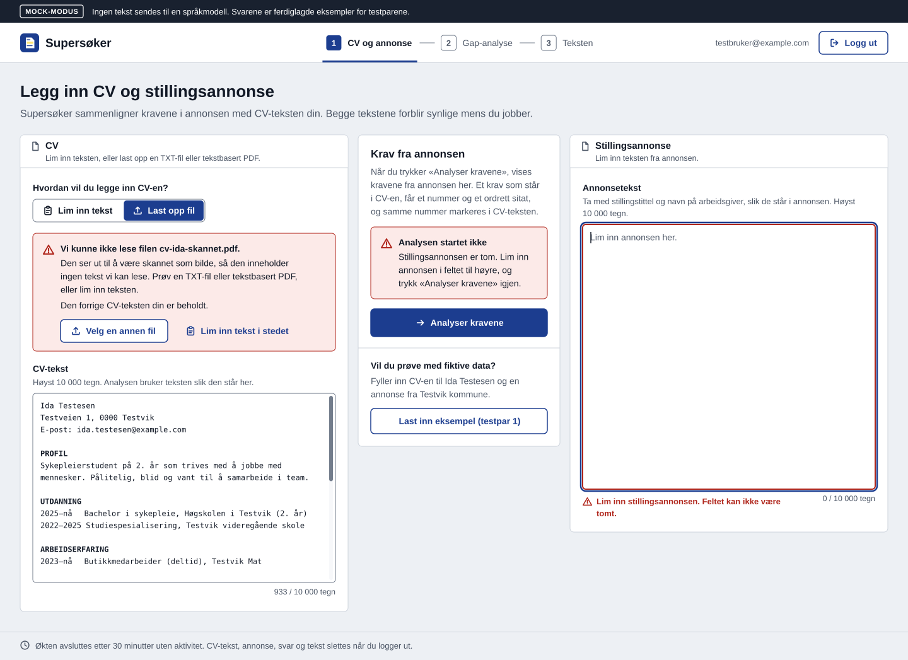
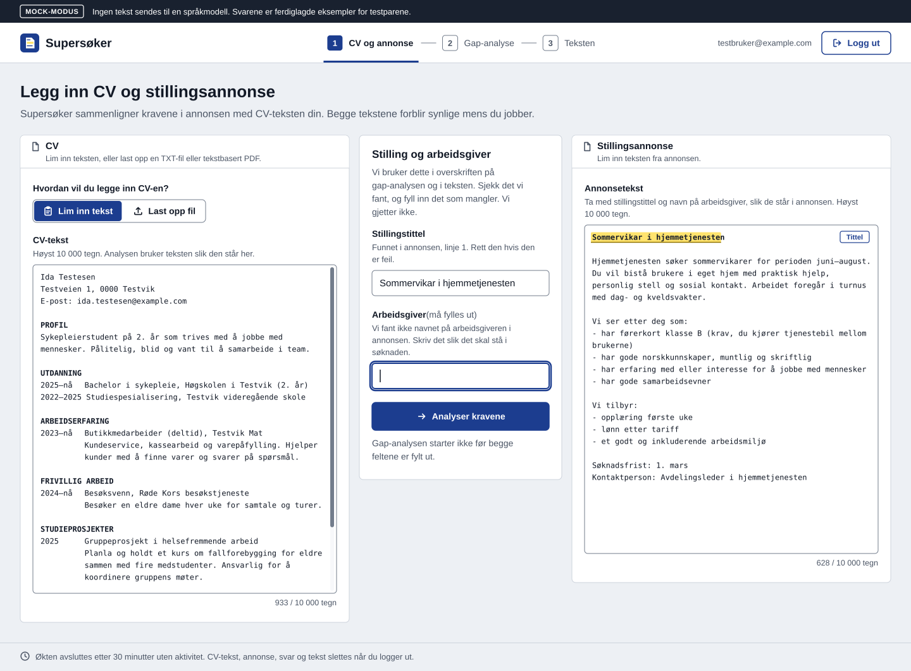
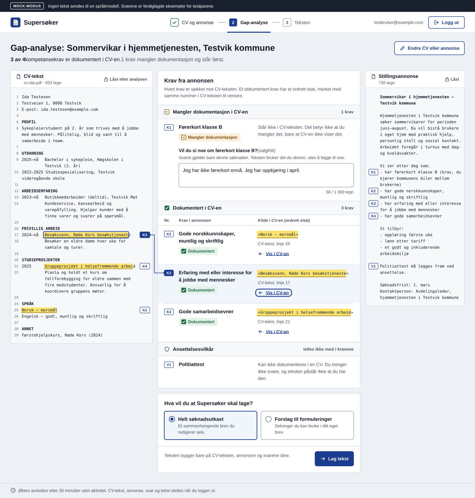
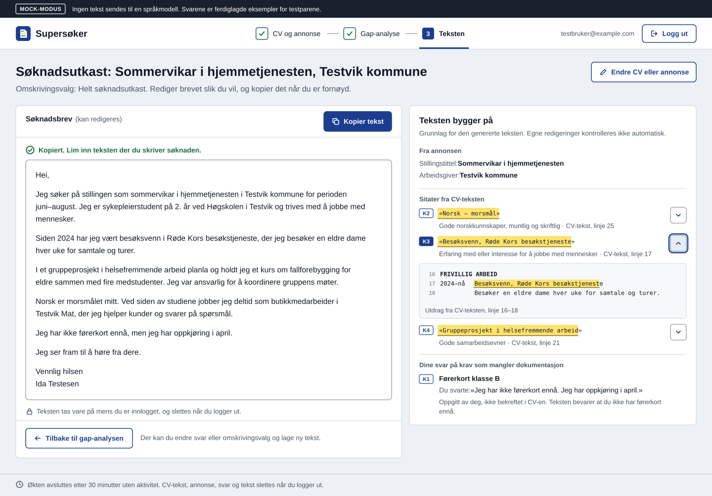
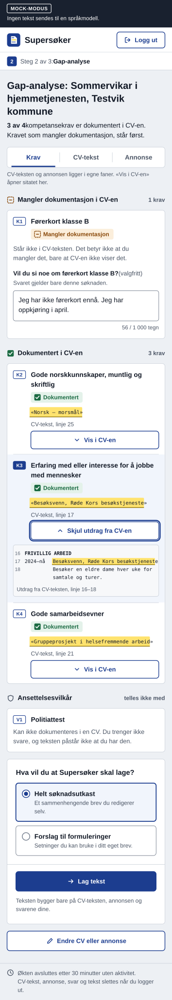
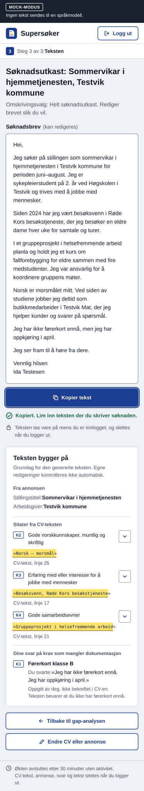

Konto
Logg inn
Samme melding for feil e-post og feil passord, e-posten beholdt og fokus i passordfeltet. Til venstre vises signaturgrepet, krav med nummer og sitat, før brukeren logger inn. FR-2, FR-3.


Opprett konto
Valideringsfeil ved feltet: e-posten står igjen, passordet er tømt og merket ugyldig med melding om minst 8 tegn. FR-1.


Steg 1: CV og annonse
CV og annonse, tom tilstand
Arbeidsbenken har samme tre kolonner som i steg 2. Midtkolonnen forklarer hva som kommer der, og samler handlingene «Analyser kravene» og «Last inn eksempel (testpar 1)». FR-4, FR-7, FR-27.

CV og annonse, utfylt
Etter opplasting av cv-ida.pdf står den innleste teksten i et redigerbart felt med monospace, så brukeren ser teksten ordrett. En påminnelse ber henne sjekke kolonner og overskrifter. FR-5, FR-7.


Feiltilstander
Fila som ikke kan leses, navngis, og brukeren får valg om ny fil eller innliming. Det tomme annonsefeltet er merket ugyldig med melding og har fokus. FR-4, FR-6, FR-8.


Stillingstittel og arbeidsgiver
Tittelen som ble funnet, vises og kan rettes, og er uthevet i annonsen. Arbeidsgiver ble ikke funnet og etterspørres med forklaring, uten gjetting. FR-9.


Analyserer
Knappen er deaktivert og sier «Analyserer …». CV-teksten og annonsen står fortsatt synlige og er låst til analysen er ferdig. FR-30.

Steg 2: Gap-analyse
Gap-analyse
Kjerneskjermen. Kravet som mangler dokumentasjon står først med utfylt svar. Rad K3 er valgt, og en linje fører fra sitatet i tabellen til den gule uthevingen på linje 17 i CV-teksten. FR-10–FR-15.


Tomtilstander
Variant A (testpar 4): alle kompetansekrav er dokumentert, ingen svarfelt. Variant B: annonsen har ingen tydelige krav, og Supersøker finner ikke på noen. FR-10, FR-14.

Steg 3: Teksten
Søknadsutkast
Brevet og «Teksten bygger på» står side om side. Sitatene er klikkbare, og K3 er åpnet med utdraget fra CV-teksten. Bekreftelsen etter kopiering vises over brevet. FR-16, FR-19, FR-20.


Forslag til formuleringer
Forslagene står som liste. Veiledningen ligger i en stiplet boks utenfor feltet, merket «Veiledning – ikke del av søknaden», og blir ikke med når teksten kopieres. FR-17, FR-19.

Dialoger, feil og økt
Endre CV eller annonse
Dialogen lister nøyaktig hva som forkastes, også egne endringer i teksten. «Avbryt» har fokus. Modusstripen ligger over bakteppet og er fortsatt lesbar. FR-21.

Feil fra språkmodellen
Variant A er tidsavbrudd med «Prøv igjen». I variant B er analysen avvist fordi et sitat ikke kunne bekreftes, og ingen delresultater vises. Feilen står der resultatet ellers ville kommet. FR-11, FR-30.

Leverandørvarsel i API-modus
Stripen øverst bytter til API-modus. Før første kall navngir dialogen OpenAI og gpt-5-mini og lister hva som sendes. Ingenting sendes før brukeren bekrefter. FR-25.

Øktvarsel og automatisk utlogging
Etter 25 minutter kommer et varsel med «Fortsett økten». Etter 30 minutter forklarer innloggingssiden at dataene er slettet og at kontoen finnes. FR-22, FR-23.

Mobil, 390 px
Gap-analyse på mobil
Kolonnene blir til fanene «Krav», «CV-tekst» og «Annonse», og steglisten viser bare aktivt steg. «Vis i CV-en» åpner utdraget direkte under kravet. NFR-2.


Søknadsutkast på mobil
Brevet først, deretter en bred «Kopier tekst»-knapp med bekreftelse. «Teksten bygger på» er stablet under, og hvert sitat har en egen linje. NFR-2.

